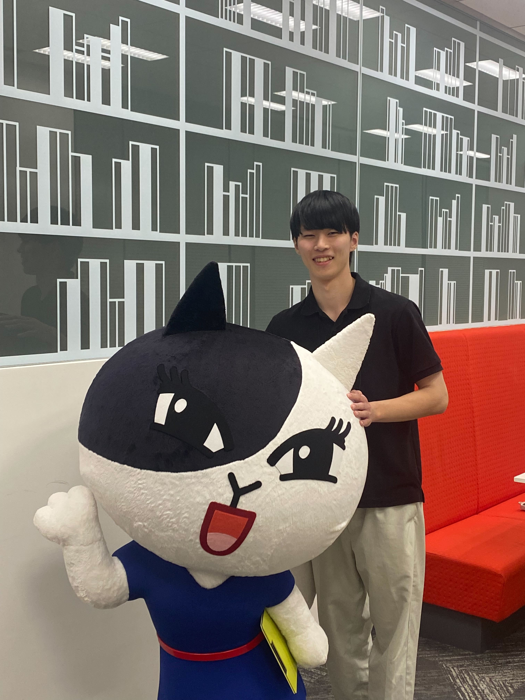

Technical engineer at Nomura Research Institute (NRI)
I am currently working as a Technical Engineer (post: Member) at Nomura Research Institute (NRI).
I have experience as a Research Assistant through both an internship and a contract position at LY Corporation, where I was engaged in R&D of multimodal AI and contributed to several academic publications. I received both my Bachelor’s and Master’s degrees in Informatics from Nagoya University. During my studies, I was a member of the Toda Laboratory, where I conducted research on machine learning–based Music Information Retrieval (MIR) and authored multiple research papers.
My primary programming language is Python, and I am proficient in libraries such as PyTorch and NumPy. I have also gained experience with several other programming languages during my academic career.
In terms of qualifications, I have a TOEIC score of 745, which reflects my working proficiency in English, and I have passed the Applied Information Technology Engineer Examination.
Regarding publications, I have one accepted paper in an international journal and two accepted papers at international conferences (peer-reviewed). I also have three preprints currently available and have authored five domestic conference papers (non-peer-reviewed).
Affiliated with Toda Lab.
Focusing on machine learning and audio-visual video moment retrieval.
Affiliated with Toda Lab. from 2023
Completed undergraduate studies in computer science.
General program
Completed high school education.
Technical Engineer (TE)
post: Member
Research assistant
Conducting research in multimedia and machine learning applications.
Internship
Participated in industry research and development projects.
Internship
Gained hands-on experience in technology development.
Part-time Position
Teaching and mentoring students in mathematics, physics, and chemistry.